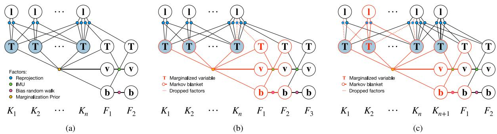
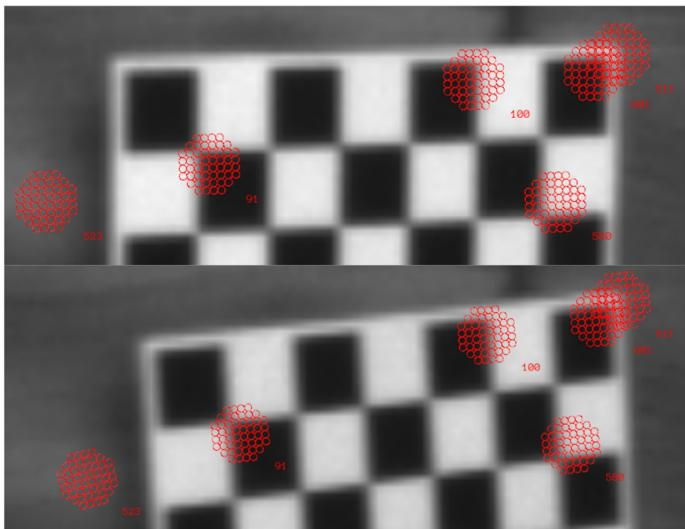
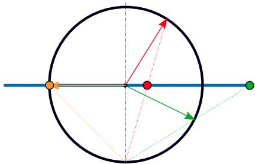

原图注（Fig. 6）： Visualization of non-linear factor recovery. Left: Densely connected factor from marginalization saved from the VIO before removing a keyframe pose. Right: Extracted non-linear factors that approximate the distribution stored in the original factor. 怎么看这张图：左边是边缘化直接留下的稠密因子——一个关键帧位姿用一堆线连到所有其他关键帧，乱成一团；右边是 NFR 抽取出来的稀疏非线性因子，结构清爽得多。这就是「同信息量、边数骤减」的可视化核心图。盯着左图的「意大利面」和右图的整洁边对比看。

原图注（Fig. 5）： Factor graphs. (a) After marginalizing a frame, the system consists of $n$ older keyframes $K_1 \ldots K_n$ and the $m-1$ most recent frames $F_1$ and $F_2$ (which could potentially also host landmarks and hence be keyframes). After a new frame has been added, the oldest velocity $v$ and the oldest bias $b$ are marginalized. If they do not belong to a keyframe (b), the wh…（图注原文较长，此处摘引前部） 怎么看这张图：这是 Basalt 的因子图，展示边缘化的两种情形（非关键帧 / 关键帧）。它告诉我们：边缘化的顺序直接决定了后续先验的稀疏性——这正是 NFR 要善加利用、又想绕开其缺点的地方。
原图注（Fig. 1）： Orthographic top-down projection of the map (MH_05 sequence of the EuRoC dataset) rendered using the estimated gravity direction. To obtain a gravity-aligned globally consistent map, non-linear factors are recovered from the marginalization prior of the VIO and combined with keypoint-based bundle adjustment. Green lines visualize keyframe connections resulting from bundle adjustment …（图注原文较长，此处摘引前部） 怎么看这张图：这是重力对齐的俯视地图。绿线是 BA 产生的关键帧连接，红线是恢复出的相对位姿因子。它直接证明了 NFR 的效果：地图既全局一致又重力对齐。

原图注（Fig. 2）： Example of KLT tracks estimated by our system. Despite changes in exposure time the proposed method is able to estimate the warp in SE(2) between the patches in the images. 怎么看这张图：展示下层 VIO 前端的 KLT 光流跟踪。即便曝光时间变化（亮度突变），系统仍能估出图像块之间的 SE(2) warp（一种平面变换）。这说明了前端在真实光照变化下的鲁棒性——是两层架构能稳定跑起来的地基。

原图注（Fig. 3）： Geometric interpretation of stereographic projection used to represent unit vectors. The two parameters define a point in the XY-plane … To obtain the corresponding 3D unit vector we cast a ray from (0,0,-1) and find an intersection with the unit sphere shown in black. Three example points are visualized in red, green and y…（图注原文较长，此处摘引前部） 怎么看这张图：Basalt 用立体投影把单位方向向量压成 2 个参数，再配合逆距离，对路标做最小参数化。这是它后端能在流形上高效优化的小技巧。看蓝色坐标系与黑色单位球，红/绿点是对应的 3D 方向。